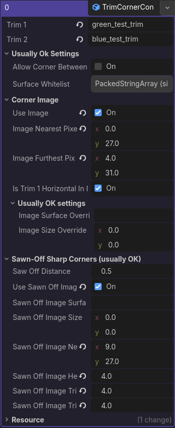
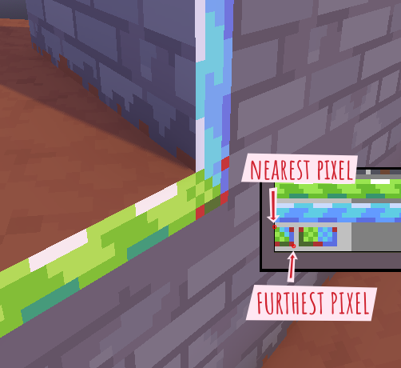
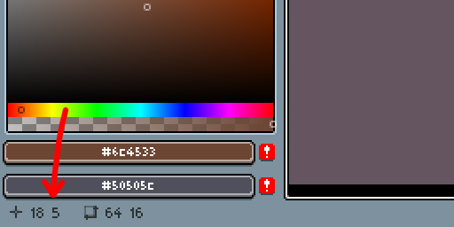

Trim corner configuration
Sometimes the trim corners that are generated by default just aren't good enough. If you want to use a custom texture for a trim corner, you'll need to add a trim corner configuration.
In my experience, special image corners aren't really necessary for most trims. Sometimes, though, they're absolutely crucial for good-looking corners.
Below you can see the default corners between trims in the top half, and in the bottom half you can see an example of trim corner images.
Here's a couple of things I'd like you to observe in the image:
- Notice how the sawn-off corners on the right use a different image than the normal corners on the left.
- Notice how only the convex corners (sort-of sharp corners) get an image. Adding images onto concave corners is not supported.
- Notice how the textures get warped for some of the corners: The texture gets stretched and squished to make it fit the geometry.

Trims only interact with trims that are in the same trim group and ignore all trims that aren't in their trim group. Before creating a trim corner configuration, make sure that its trims are in the same trim group.
To help you find the settings that are actually important, settings that you usually do not need to touch are hidden away in groups marked with “usually OK”.
Sawn-off sharp corners can be given an image texture, but they're usually pretty rare. I would generally say that it's not worth your time.

General settings
Trim 1
The corner's first trim.
This is the first trim of the corner. In the corner image, the first trim generally goes towards the left side of the image.
Trim names are sensitive to capitals and spaces. For example, if your trim is called “brick_trim” and you fill in “Brick_trim” for this option, you'll get an error, because of the mismatch in the capital letter B.
Trim 2
The corner's second trim.
This is the second trim of the corner. In the corner image, the second trim generally goes upwards.
It's worth noting that this is allowed to be the same trim as trim 1.
Trim names are sensitive to capitals and spaces. For example, if your trim is called “brick_trim” and you fill in “Brick_trim” for this option, you'll get an error, because of the mismatch in the capital letter B.
Allow corner between two sides of the same edge
By default, AutoTrimmer won't generate corners between two trims that are both connected to the same edge. Sometimes, you might want this. For example, if the trims represent a wooden beam on an outer edge of a building, it can be nice to have a cap at the ends of the beam.
Surface whitelist (optional)
This prevents the corner from crossing through surfaces that you don't want it to go through.
You only rarely need this.
Surface names are sensitive to capitals and spaces. For example, if your surface is called “brick” and you fill in “Brick” for this option, you'll get an error, because of the mismatch in the capital letter B.
Corner image
Use image
When enabled, convex corners (sharp corners) will be decorated with a corner image.
Image nearest pixel (required for corner image)
The texture coordinate closest to the corner vertex.
This is the pixel coordinate of the image's corner that's closest to the vertex of the corner.

In Aseprite, you can find the coordinate of the pixel your cursor is hovering over in the bottom-left corner.

Image furthest pixel (required for corner image)
The texture coordinate furthest away from the corner vertex.
This is the pixel coordinate of the image's corner that's furthest away from the vertex of the corner.
Is trim 1 horizontal in image
Whether the first trim is horizontal or vertical.
If enabled, trim 1 is either on the left or on the right side of the image. Otherwise, it's either above or below the image. When enabled, whether it's on the left or on the right is determined by the nearest and furthest coordinate.
Image surface override (optional)
If you don't want to use the default trim surface for this corner image, you can fill in the name of the surface you want to use here.
Surface names are sensitive to capitals and spaces. For example, if your surface is called “brick” and you fill in “Brick” for this option, you'll get an error, because of the mismatch in the capital letter B.
Image size override (optional)
By default, a corner image will derive its texture size from its surface. This “just works” in almost all situations, but if this somehow doesn't work for you, you can specify a different texture size here.
Sawn-off sharp corners
Saw-off distance
Set a maximum length for this trim corner.
When a trim corner is very sharp, it can get very long. As a matter of fact, it can basically get infinitely long. Infinitely long corners do not look very good, and because of that, we may have to saw off the tip of a corner.
This setting determines the distance at which the tip of the corner is sawn off. This should generally be approximately two or three times the width of the trim.
Use sawn-off image
When enabled, sawn-off corners will be decorated with an image.
This is only rarely worth your while, because sawn of corners are usually not very common.
Sawn-off image surface override (optional)
If you don't want to use the default trim surface for this sawn-off corner, you can fill in the name of the surface you want to use here.
Surface names are sensitive to capitals and spaces. For example, if your surface is called “brick” and you fill in “Brick” for this option, you'll get an error, because of the mismatch in the capital letter B.
Sawn-off image size override (optional)
By default, a sawn-off corner image will derive its texture size from its surface. This “just works” in almost all situations, but if this somehow doesn't work for you, you can specify a different texture size here.
Sawn-off image nearest pixel (required for sawn-off corner image)
The coordinate of the pixel that's closest to the original vertex of the sawn-off corner. Specifically, we need the pixel for which the top-left corner of the pixel is at the original vertex.
Sawn-off image height pixels (required for sawn-off corner image)
This specifies the height of the sawn-off corner image (in pixels).
Sawn-off image trim 1 width pixels (required for sawn-off corner image)
In the sawn-off image, how many pixels to the left of the nearest pixel is the top of trim 1?
Sawn-off image trim 2 width pixels (required for sawn-off corner image)
In the sawn-off image, how many pixels to the right of the nearest pixel is the top of trim 1?